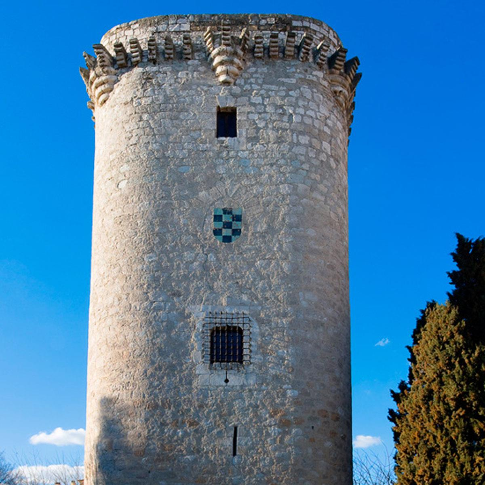
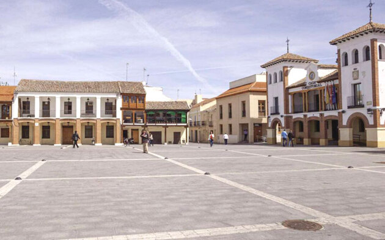
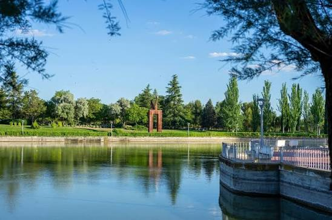

Historia y Origen
Origen vinculado al "Punctum" como centro geográfico de la Península Ibérica y su evolución.
Ver más

Ocio y Zonas Verdes
Espacios deportivos, gastronomía y grandes parques como el Juan Carlos I.
Ver más
POBLACIÓN ACTIVA
56.651
Habitantes censados en 2026
ALTITUD MEDIA
604 m
Sobre el nivel del mar
PULMÓN VERDE
Juan Carlos I
Extenso parque municipal y lago
CONECTIVIDAD
Cercanías C-3
25 min a Madrid - Sol / Atocha